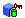
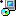
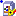

The following icons might appear in the Project Explorer window. Depending on the LabVIEW modules you have installed, you might see other icons in the Project Explorer window.
| Icon | Description |
| The item is locked. | |
| You checked the file out of source control. | |
| Another user has checked the file out of source control. | |
| You and another user both checked the file out of source control. | |
| The file is in source control and is not checked out. | |
| no source control icon | The file is not in source control. |
| The LabVIEW project library access for the item is private. | |
| A question mark with a blue background indicates that LabVIEW cannot find the default editor for the item. For example, if the item is a Microsoft Word document and Word is not installed on the computer, this icon appears next to the item. | |
| An exclamation point with a yellow background indicates the project has conflicts or LabVIEW cannot find the module or device that supports this item. | |
| A silver folder identifies a virtual folder. A virtual folder is a folder in the project that organizes project items and does not represent files on disk. | |
| A blue folder with a yellow cylinder identifies an auto-populating folder. An auto-populating folder is a folder in the project that updates in real time to reflect the contents of a folder on disk. | |
| LabVIEW custom control. | |
| LabVIEW project library. | |
|
Build specification for a LabVIEW Web service. |
| Shared variable with the Variable Type set to Single-Process on the Variable page of the Shared Variable Properties dialog box. | |
| Shared variable with the Variable Type set to Network-Published on the Variable page of the Shared Variable Properties dialog box. | |
| A red exclamation point with a green background indicates the variable configuration is invalid. For example, if the library contains shared variables with the LabVIEW Datalogging and Supervisory Control (DSC) Module or with the LabVIEW Real-Time Module, but the DSC Module or the Real-Time Module is not installed, this icon appears next to the shared variable. This icon also appears next to an item if the library file is modified outside of LabVIEW or in a later version of LabVIEW and opened in a previous version that does not support a particular property type or setting. | |
| (DSC Module) I/O Server | |
| A blue cube represents a LabVIEW class. | |
| A green cylinder represents data storage. | |
|  | A green cylinder and red key on top of a blue cube identifies a private data control. |
| LabVIEW XControl library. | |
| An orange rectangle with an orange center represents the Data type of an XControl. Data is a type definition VI that specifies the data type of the XControl. Double-click the Data ability in the XControl library to open and edit the Data type definition. | |
| A blue triangle represents the State of an XControl. State, also known as display state, is a type definition VI that specifies any information other than the data of an XControl that affects the appearance of the control. Double-click the State ability in the XControl library to open and edit the State type definition. | |
| A black wrench represents the property of an XControl or LabVIEW class. Properties allow the user of an XControl or class to configure the XControl or class programmatically. | |
| A dashed purple arrow represents the method of an XControl. XControl methods allow the user of an XControl to configure the XControl programmatically. | |
| The brown square with an oval attached on the left side represents several different XControl abilities. Abilities are components of the XControl that are required by the XControl to function properly. | |
| Build specification for a stand-alone application. | |
|  | Build specification for an installer. |
|
Build specification for a .NET interop assembly. |
|  | Build specification for a packed project library. |
| Build specification for a shared library. | |
| Build specification for a source distribution. | |
| Build specification for a zip file. |